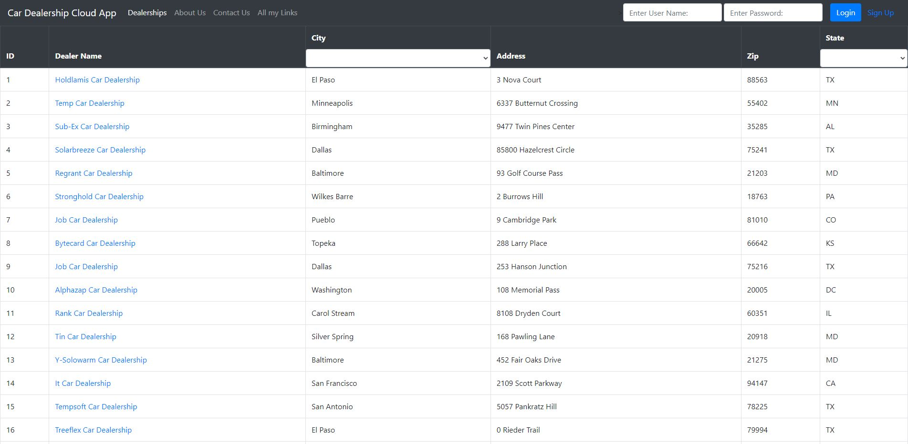
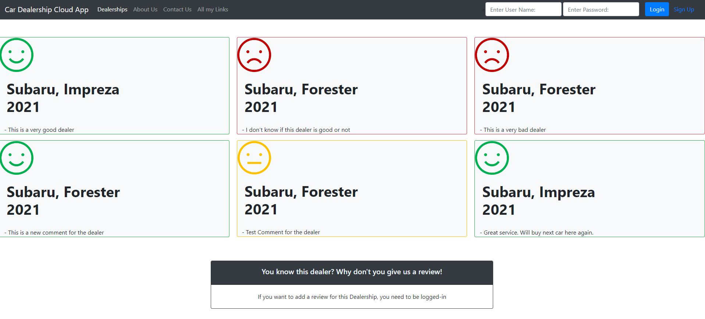

Dealerships Cloud App
Release on the IBM Cloud platform. This is an app created during one of my course on Coursera. This app is created with Dijango and it is an application that persists, processes and presents data in a fashion and responsive way, forSource code: https://github.com/nardisync/CloudAppDevelopment_Capstone


This app is the final project that I did during one of my certificate for improve my skill on Full-Stack.
Some Feature
- It is possibile to Login as a new user thanks to the Django Login sistem.
- Allow an user to take an exame on one, or more, of the Course displayed.
- It gives feedback on you answer after the text is finished.
- Allow an Admin to add more course or to modify the course created.
- It is running on IBM Cloud.